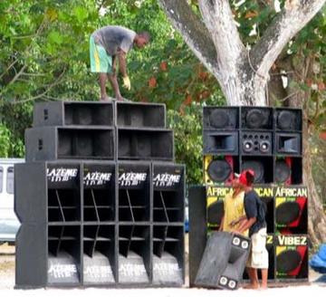
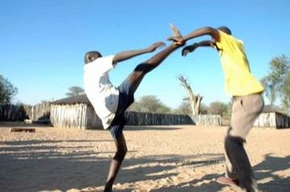
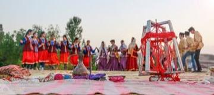

Modern Heritage 1

Jamaican Sound System Selector
Jamaica · Musical instruments
Living Traditions 16

Bamum script writer
Cameroon · Crafts and making
Bottle Dance
Paraguay +1 · Dances
Cueca
Chile +2 · Dances
Dabke line dance
Lebanon · Dances
Engolo
Angola · Dances
Eskista
Ethiopia · Dances
Faroese chain dance
Denmark · Dances
Frevo Umbrella Dance
Brazil · Dances
Gumboot dance rhythm
South Africa · Dances
Intore dance
Rwanda · Dances
Jebena coffee brewing
Ethiopia +1 · Crafts and making
Kochari
Armenia · Dances
Malambo
Argentina · Dances
Marinera Norteña
Peru · Dances
Tahtib
Egypt · Dances
Yalli
Azerbaijan · Dances